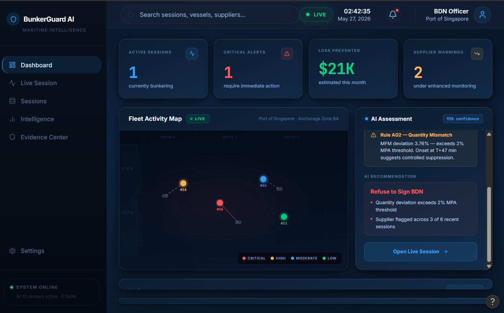

FEATURED / 2026NO. 001 ✳ THE CURRENT CHAPTER
Bunker
Guard AI
Before a fuel delivery is signed off, the evidence needs to agree. BunkerGuard reconciles delivery documents, meter data and other signals to surface short-delivery and data-integrity risks.
I designed the five-stage human-in-the-loop workflow, four-agent system, 26 deterministic anomaly rules and SHA-256 evidence reports.
TOP 5 WORLDWIDE / SUPERAI NEXT · OCEAN HACKATHON CHALLENGE OWNER